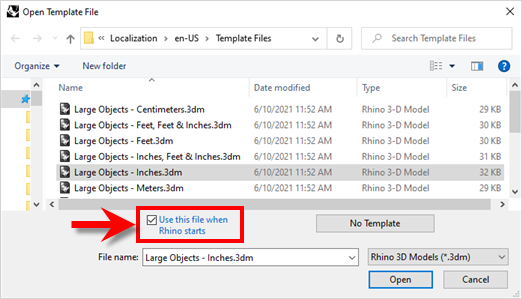
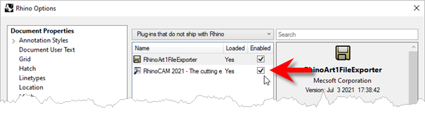
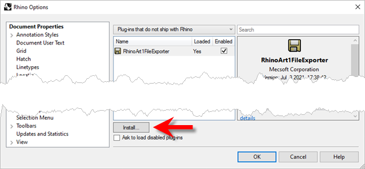

|
<< Click to Display Table of Contents >> Navigation: RhinoCAM FAQs > System Errors > How to: Fix the Plug-in Initialization Failed Error? |
Below are a few steps to resolve the Plug-in Initialization Failed message.
1.Please make sure your Rhino units is set to Inches or Millimeters when Rhino starts. This can be located under File - New - Select inch or millimeter template and make sure to select the check box at the bottom of the dialog for "Use this when Rhino starts".
 Rhino > New > Open Template File |
2.Next, from the Rhino menu, select Tools and Options. Then click Plug-ins from the left pane. From the right pane, click Plug-ins that do not ship with Rhino. (this would be a drop down at the top right corner). Check if RhinoCAM is listed.
 Rhino > Tools > Options > Plugin that do not ship with Rhino |
3.If the RhinoCAM plugin is not listed here, select the Install button.
 Rhino > Tools > Options > Plugin that do not ship with Rhino Browse to: •Rhino 7: C:\Program Files\Rhino 6\Plug-ins\RhinoCAM 2021 for R7 and select RhinoCAM 2021 For Rhino7.0.rhp and click Open. •Rhino 6.0: C:\Program Files\Rhino 6\Plug-ins\RhinoCAM 2021 for R6 and select RhinoCAM 2021 For Rhino6.0.rhp and click Open. |
4.This should load the RhinoCAM plug-in. Close the Options dialog, close Rhino and reopen it
5.Check if RhinoCAM loads when you restart Rhino. If RhinoCAM does not load automatically, from the Rhino menu, Select Tools and Options. Then click Plug-ins from the left pane. From the right pane, click plug-ins that do not ship with Rhino. (this would be a drop down at the top right corner). Check if RhinoCAM is listed. If it is make sure the box next it checked.
Rhino > Tools > Options > Plugin that do not ship with Rhino |
6.Close & restart Rhino & this should load your RhinoCAM plug-in.